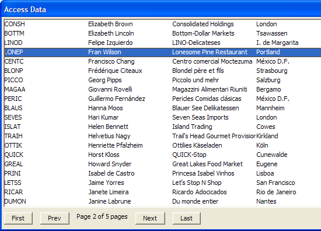

Using the A5_ADO_TO_ARRAY() function
This script demonstrates how to use the A5_ADO_TO_ARRAY()function which populates an array with data from an Access database, or an ADO connection string. Refer to the Xbasic Reference manual for a full description of the parameters that can be passed to the A5_ADO_TO_ARRAY() function. The A5_ADO_TO_ARRAY() function is a wrapper function. Inside the function, direct calls are made to ADO to fetch the data.

Example
Using the A5_ADO_TO_ARRAY() function is easier for users who do not have a lot of experience using ADO.
ado.MdbFileName = find_Northwind()'Returns the filename of the Northwind.mdb file on this computer. 'If northwind.mdb not found, then prompt user to download it. if ado.MdbFilename = "failed" then end end if |
Make sure the northwind database file is available and has been selected.
dim xxx as P dim data as C dim recordMsg as C dim indx as N ado.sql = "SELECT CustomerID, ContactName, CompanyName, city FROM Customers ORDER BY ContactName" do.Rows = 20 do.Page = 1 if file.filename_parse(ado.MdbFilename,"Ne") <> "northwind.mdb" then ui_msg_box("Error","You have not selected the Northwind.MDB file.") end end if if file.exists(ado.mdbfilename) = .f. then ui_msg_box("Error","The specified file was not found: " + ado.mdbfilename) end end if |
Display a multi-column list box 150 characters wide, with 6 columns each 25 characters wide. The buttons are selectively enabled or disabled based on the values of the info.currentPage and info.TotalPages variables returned by the previous call.
data = "" recordMsg = "" indx = 1 ui_dlg_box("Access Data",<<%dlg% {startup=init} %dlg%,<<%code% |
Add the event handlers for the navigation buttons. Passing LOCAL_VARIABLES()allows the receiving get_data()function to populate the local xxx dot variable. The data returned is controlled by the do.page variable.
if (a_dlg_button = "init") then a_dlg_button = "" get_data(local_variables()) end if if (a_dlg_button = "next") then a_dlg_button = "" do.page = do.page + 1 if (do.page > xxx.info.totalPages) then do.page = xxx.info.totalPages end if get_data(local_variables()) end if if (a_dlg_button = "prev") then a_dlg_button = "" do.page = do.page -1 if (do.page < 1) then do.page = 1 end if get_data(local_variables()) end if if (a_dlg_button = "first") then a_dlg_button = "" do.page = 1 get_data(local_variables()) end if if (a_dlg_button = "Last") then a_dlg_button = "" do.page = xxx.info.totalPages get_data(local_variables()) end if %code%) |
Add the event handlers for the navigation buttons.
function get_data as v (vars as P) with vars xxx = a5_ado_to_array(ado, do) if xxx.error.HasError = .t. then ui_msg_box("Error", xxx.error.errorText) exit function end if data = "" for i = 1 to do.rows data_i = "" for j = 1 to xxx.fields.FieldArray.size() ' Put in a tab stop every 1.5 inches data_i = data_i + xxx.array.rowi.dataj.initial + "{T="+1.5*j+"}" next j data = data + data_i + crlf() next i data = alltrim(data) recordMsg = "Page " + xxx.info.CurrentPage +" of " + xxx.info.TotalPages + " pages" indx = indx end with end function |
Next
See Also
A5_ADO_TO_ARRAY(), ADO Examples
Limitations
Desktop applications only